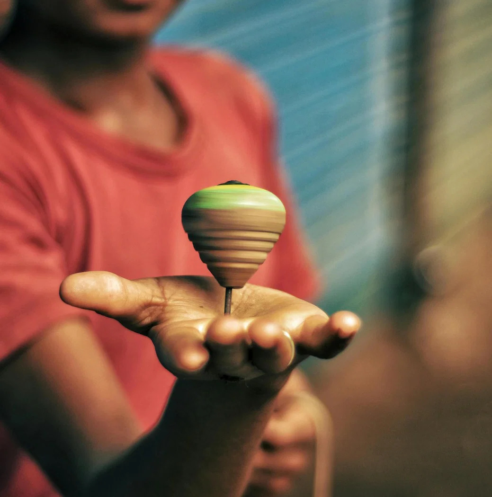
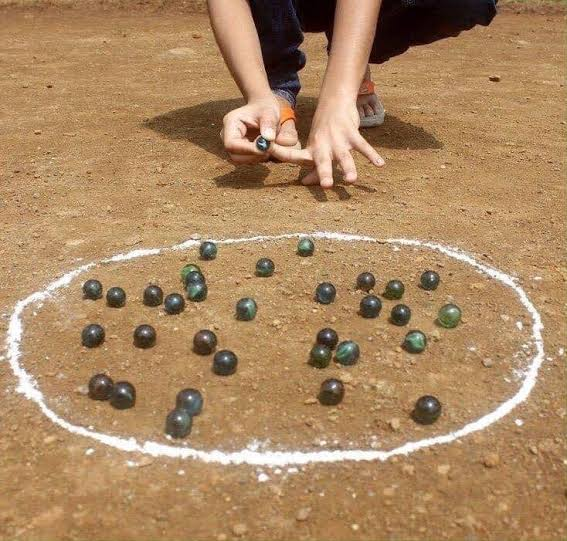
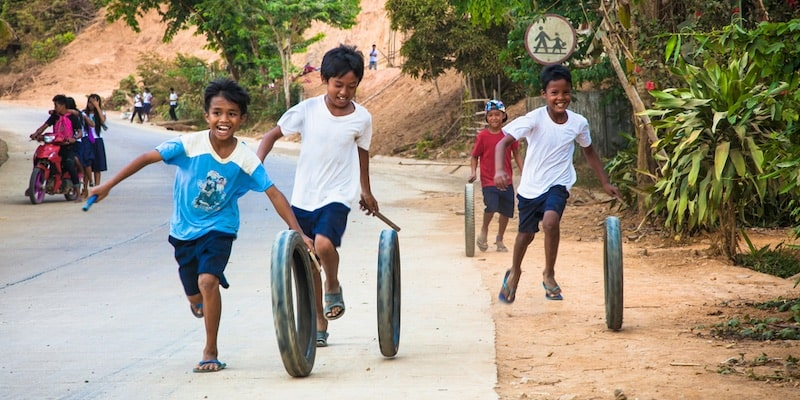
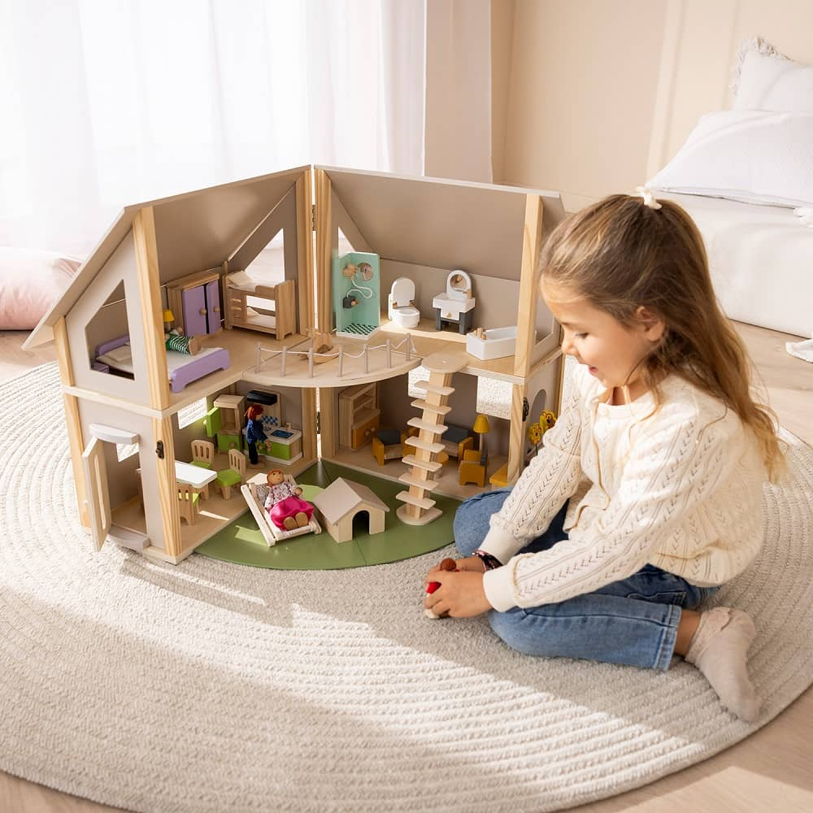
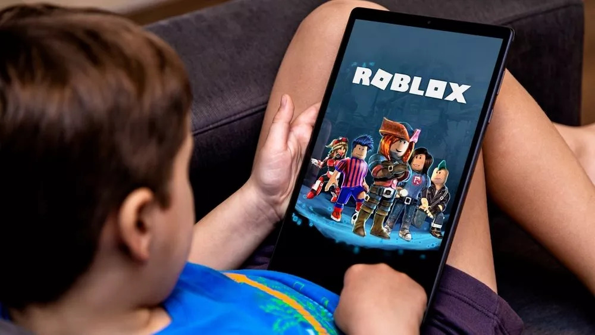

Juegos de Antes vs Juegos de Ahora
Hubo una época en la que una calle, una cuerda o una pelota podían convertirse en el mejor plan de la tarde. Hoy, los videojuegos, los celulares y las nuevas formas de entretenimiento también forman parte de la infancia. A través de 11 entrevistas en el Mall del Sur, en Guayaquil. Exploramos cómo han cambiado los juegos, qué recuerdos conservamos y qué valor siguen teniendo estas experiencias.
¿A qué jugábamos antes y a qué jugamos ahora?
Juegos de antes
El trompo, el boliche, la soga, las escondidas, e incluso, jugar con llantas de bicicleta fueron algunos de los juegos recordados. Las calles y los parques eran espacios para divertirse y hacer amigos.
Juegos de ahora
El celular, los videojuegos y las redes sociales aparecen entre las formas de entretenimiento más mencionadas. Sin embargo, juegos con juguetes de muñecas y casitas también son populares.
Cada barra muestra cuántas personas de su grupo mencionaron ese juego.
Antes · 7 adultos



Ahora · 4 menores

